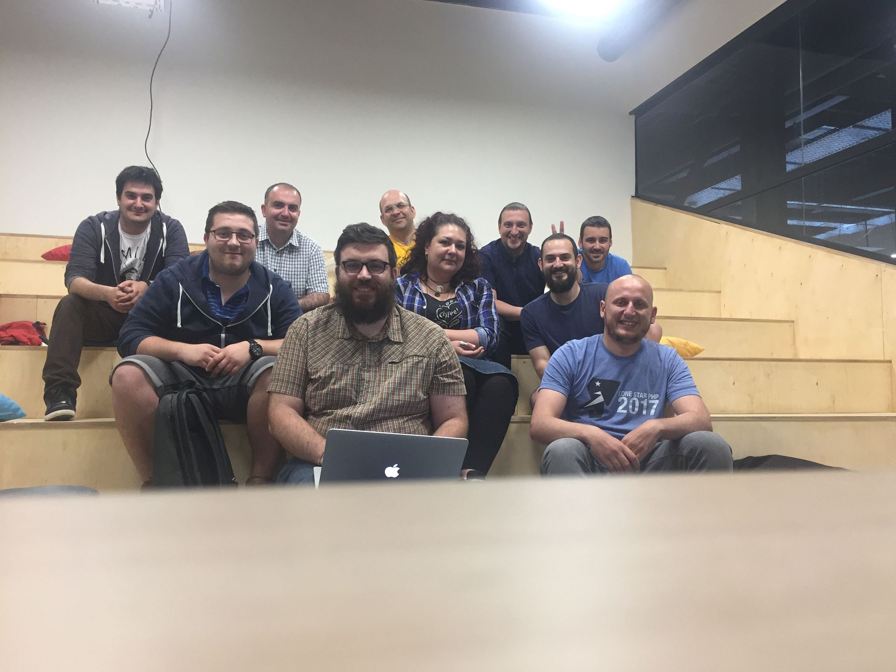
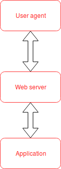
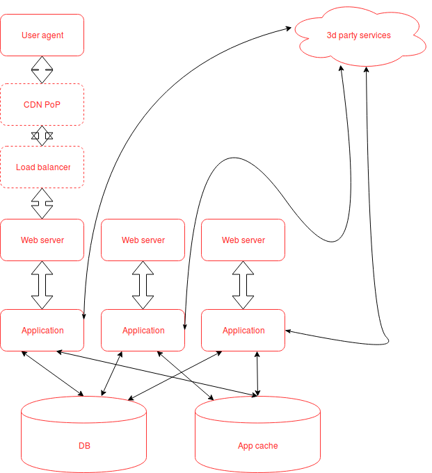
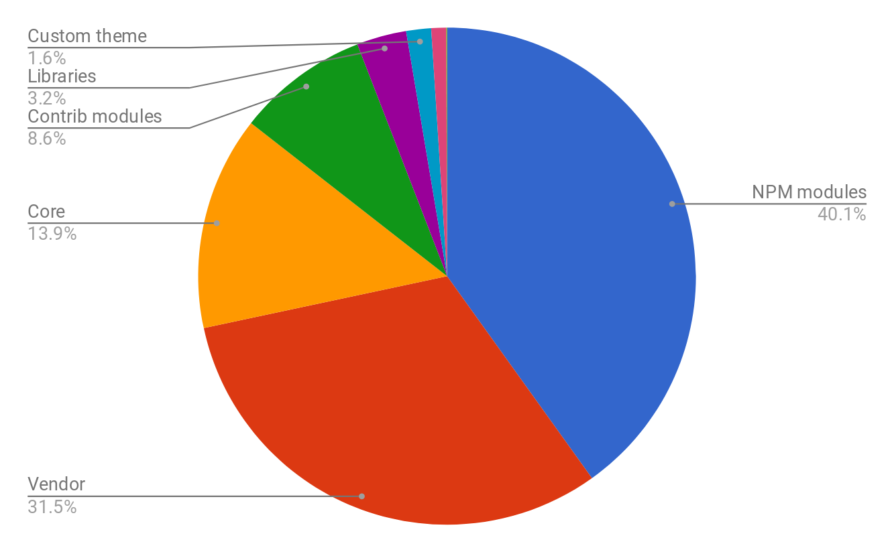

Behat vs. PHPUnit
bit.ly/behatunit
Slides are hosted on github, press 's' if you want to read speaker notes too.
About myself
Valery "valthebald" Lourie
Core mentoring coordinatorBulgaria DUG
 https://www.facebook.com/bulgaria.dug/We will not
- Write a single behat scenario
- Write a single unit test
- Decide what is better
Agenda
- Anatomy of a web application
- What do we do as web developers
- What do we do as QA people
What is web application
What is web application

What is web application
You test what you are responsible for
- (Optionally) load balancer
- Web server
- Application
- External connectors (DB, search servers, web services etc.)
Application in detail

What the client cares about?
- Overall performance
- End user experience
- Site builder experience